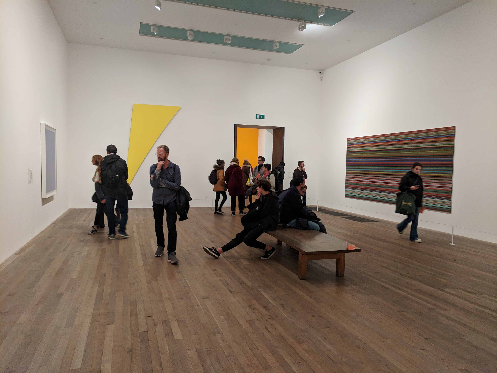
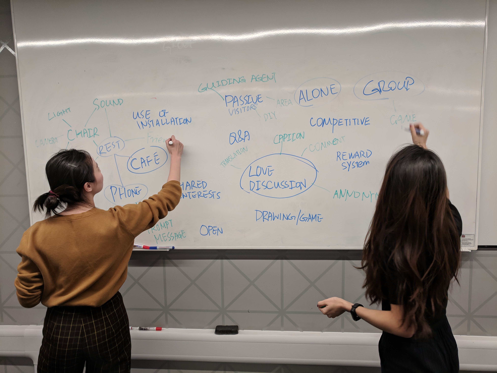
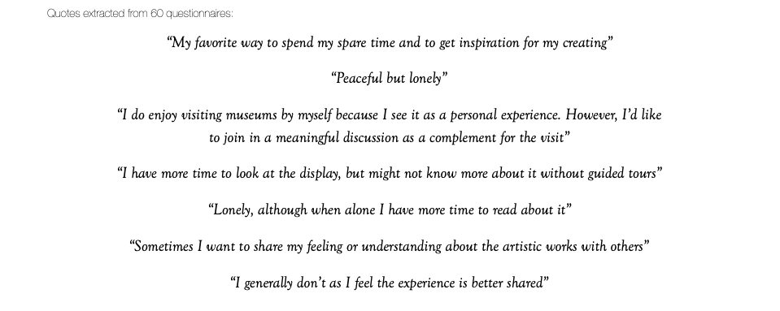
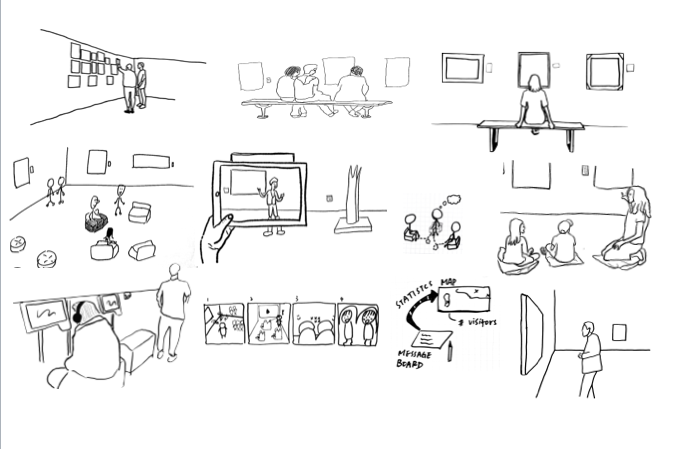
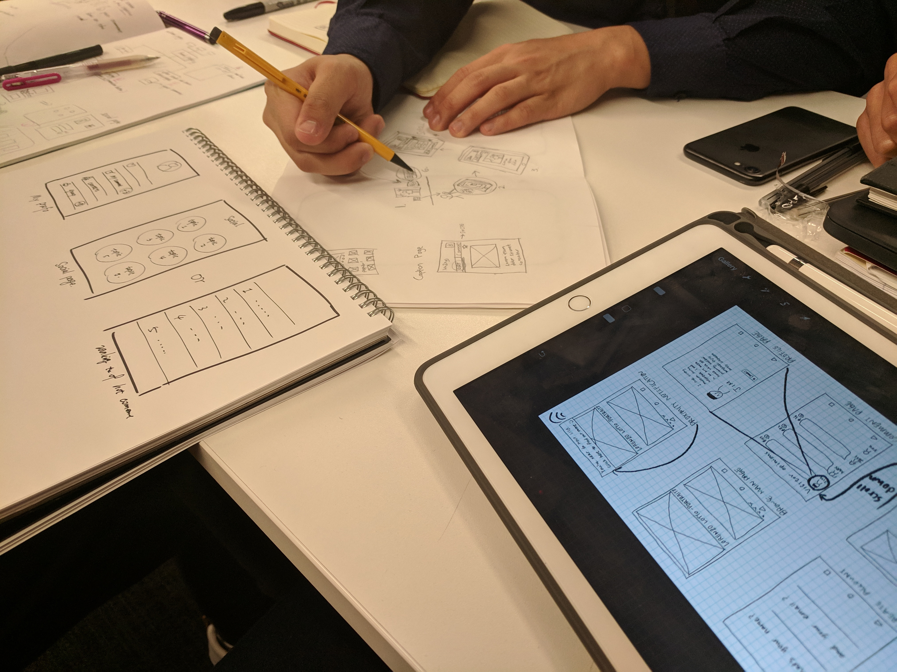
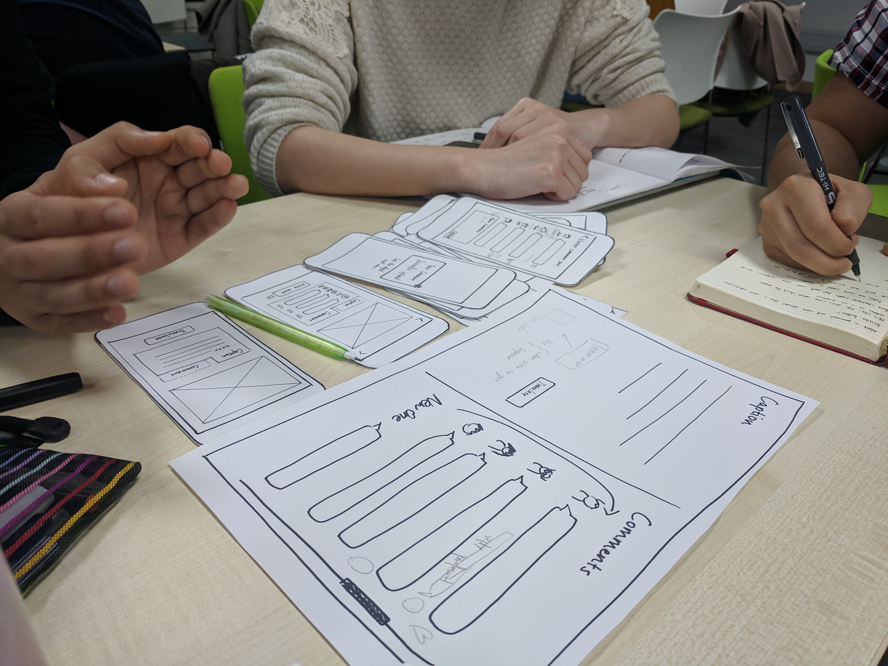
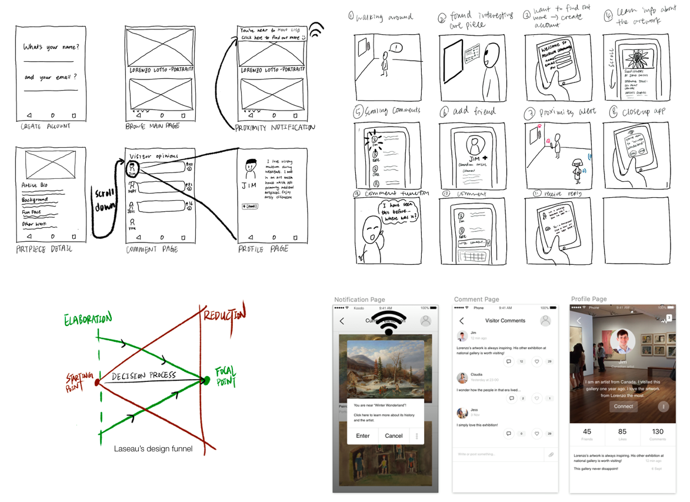
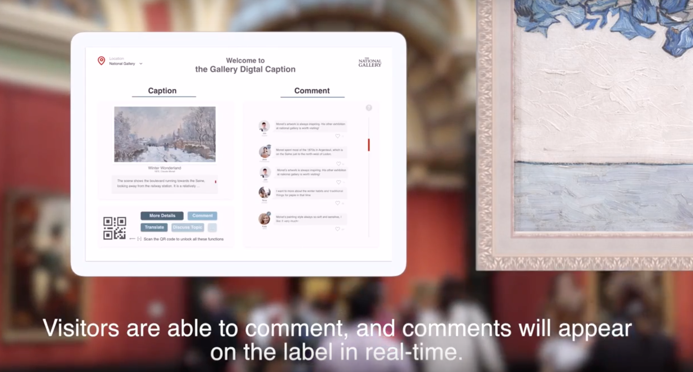
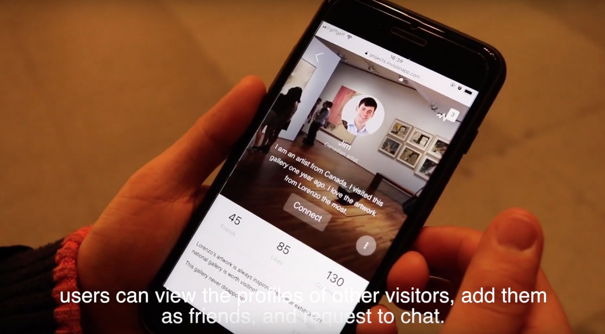
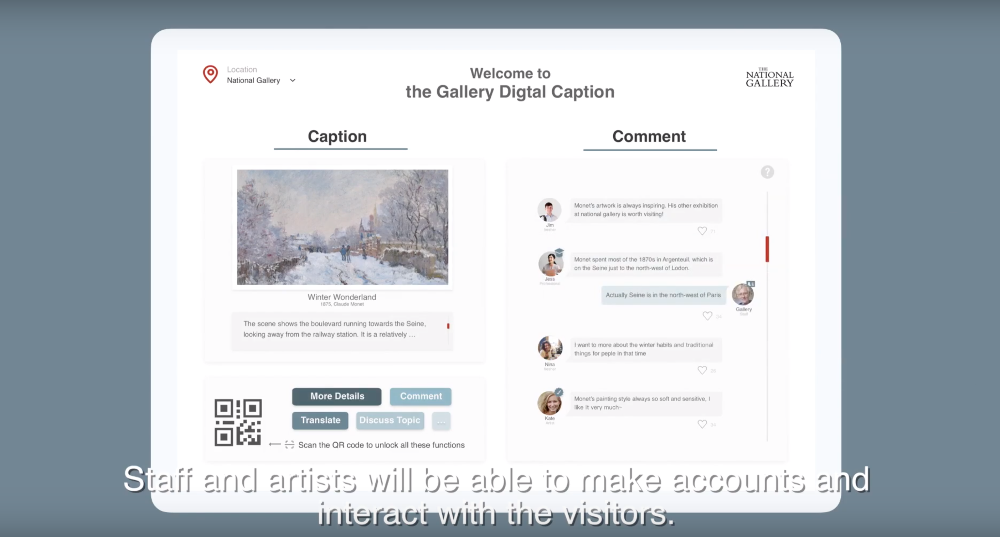

Project type: Research -- Design -- Testing -- Final prototype Team size: 3 other graduate students (psychology, design, computer science) Role: Primary Researcher, Designer Methods: User research, qualitative data analysis, sketching, wireframing, hi-fi prototyping, usability study

60 responses from questionnaire
To begin to develop an understanding of our users’ needs, we constructed a questionnaire consisting of both open and closed questions. The questions explored general themes relating to visiting frequencies and durations, motivations for visiting, and issues surrounding comfortable interaction with others. We recruited people online and in-person outside of art museums in London, resulting in a total of 60 responses.
10 semi-structured interviews
In addition, we conducted semi-structured interviews with 5 visitors and 5 members of staff at Tate Modern. The themes of the visitor interview focused more specifically on interaction preferences, whilst the staff interview was adapted to include their observations of visitor-visitor/visitor-staff interaction and their knowledge of how interaction was encouraged by the museum.

We used thematic analysis for our interview data, then used affinity diagram to organise data into categories.
Some of the key ideas that emerged were:

Gathering insights from previous research and our data collection, we aimed to design an experience that promotes deeper understanding of the artwork or artist, acts as a prompt for visitors of all levels to share their opinions, and to extend the topics around the exhibition outside of the museum. We started to sketch our own ideas with individual brainstormings. Then we discussed our ideas in terms of how close it addresses the user pain points.
We came up with concepts that were of general and coarse granularity. For example, we wanted to provoke conversation at museum seating area using conductive paint, to interact with artwork through bodily collaboration, or to activate artwork display by two different handprints. We eliminated ideas that were ineffective at easing user pain points, costly to the museum and those solutions that already exist yet not welcomed by visitors. We then evaluated our remaining ideas based on our selection criteria: novelness and feasibility.
We moved forward the idea of web app and digital wall display eventually. This is because it can deepen visitor knowledge in art by providing extra information and fun facts about the artwork background, it can also promote interaction within the visitor circle through the commenting and following other visitors.

We decided our initial workflow by listing the tasks that a visitor would do when he/she interact with our intervention. After that, we each came up with five sketches of the web application, totaling 20 sketches. We then discuss the pros and cons of each design and put forward a complete user flow with different versions of the interface for further testing. We created paper prototype of a mobile phone app from our initial sketches.We also created a paper wall display for later testing.

Evaluation goal
To reveal whether our intervention can help enrich visitor experience at museums.
Methodology
We conducted an usability test on the interface of web app and digital wall display, firstly, in terms of its learnability, whether users can learn how to use our intervention in little time so as to prevent quitting [1,2]. An example would be how effective it is for users to scan QR code for web app after reading the wall display. Secondly, we tested the interface design, meaning which interface options do participants prefer. Finally, we learned participant satisfaction, meaning how they feel after interacting with our intervention.We observed the process of participants reading the artwork description on the display, then using the handheld paper prototype to scan the QR code, leading to the web app interface. Various user flows of the web app were provided during the interaction. Participants were asked to share their preferences to each options. After the prototype session, participants were interviewed about their feelings towards the experience.
Usability test results
The usability test informed us that people could easily understand that they are required to open the web app by the QR code in order to learn more facts about the art (plus other features). We found that during the proximity notification, the participants preferred a whole-screen message box over a non-intrusive banner. They generally welcomed the interruption on the web app because they would like to be immersed in the visiting experience by having extra exhibit information prompted conspicuously on their phones.
The response for choosing between continuous scrolling and tab node was mixed. Some prefer scrolling as less attention required to navigate around the app, while other prefer tab mode could give an overview of the artwork and comment tabs at the beginning.
Regarding the participants’ feeling towards the intervention, they were positive to learn more fun fact about the art piece. A participant pointed out that reading other visitors comments on the wall display was a fun thing to do, as she usually read the comments in other media as well. The following images represent part of the design process.

The constructive and positive feedback from our participants were encouraging. For the mobile web app, we decided to adopt a main page that could be scrolled continuously instead of having the art piece information and comments put in separate tabs. This is to enhance user experience in the physical space by minimising cognitive workload to navigate between tabs during the exhibition.
We incorporated the feedback on full-screen message notification into our final design. A final prototype was created that allow user to interact on any mobile browsers.


